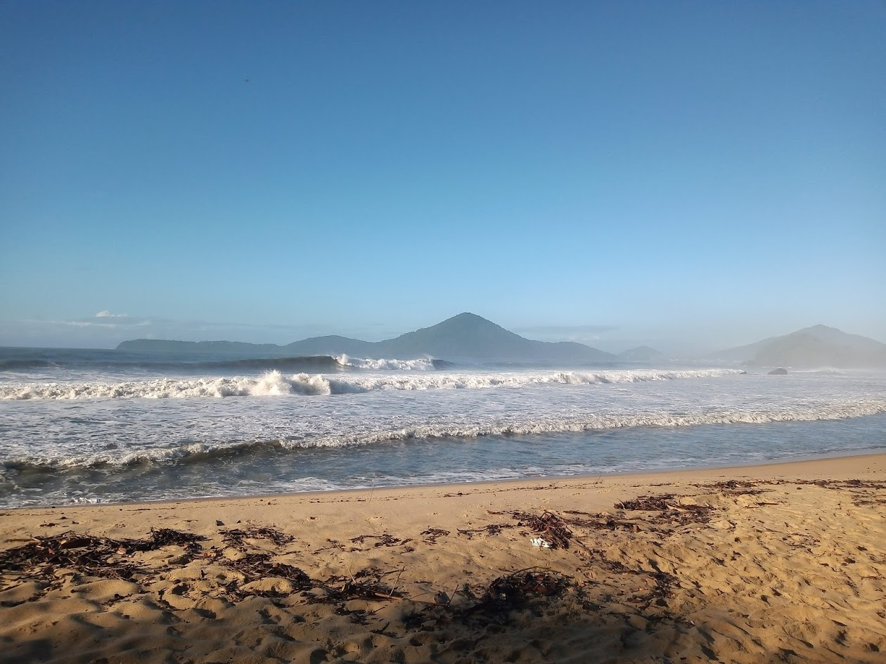
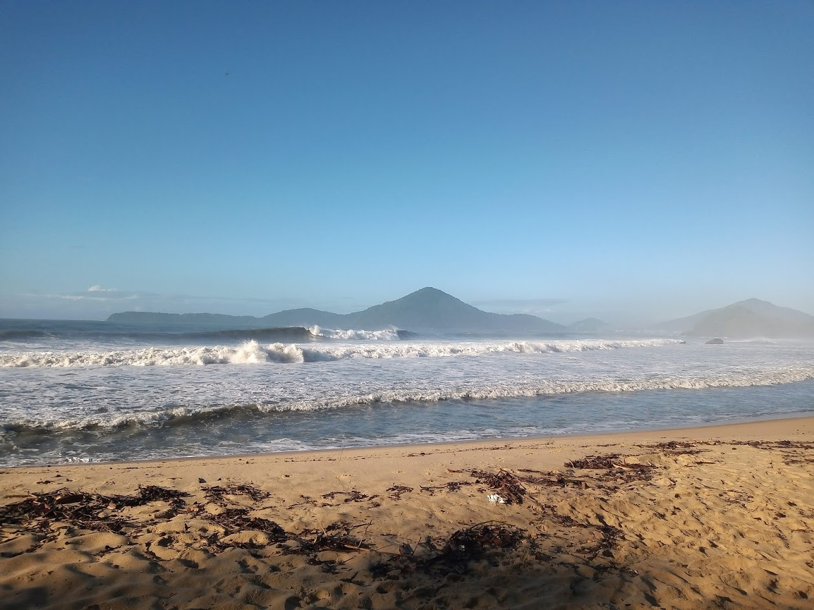

Operação marítima direcionada a lajes e picos expostos ativados por swell consistente.
← Voltar para Em Busca da Onda Perfeita 

A ativação da operação depende da análise técnica combinada de múltiplos fatores. Não é apenas sobre tamanho — é sobre alinhamento de vetores.
Quando as condições convergem, a operação entra.
Operação voltada a surfistas experientes que buscam acesso inteligente, timing preciso e estratégia marítima aplicada à performance.
Informações sobre Valores*A operação depende das condições de navegação e leitura técnica do mar.